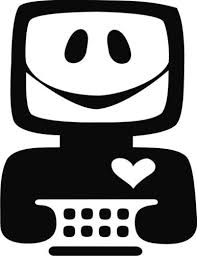
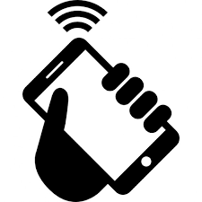
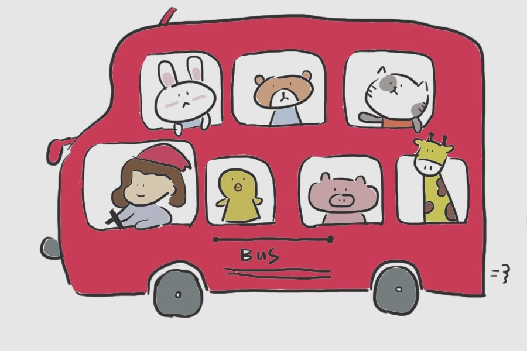
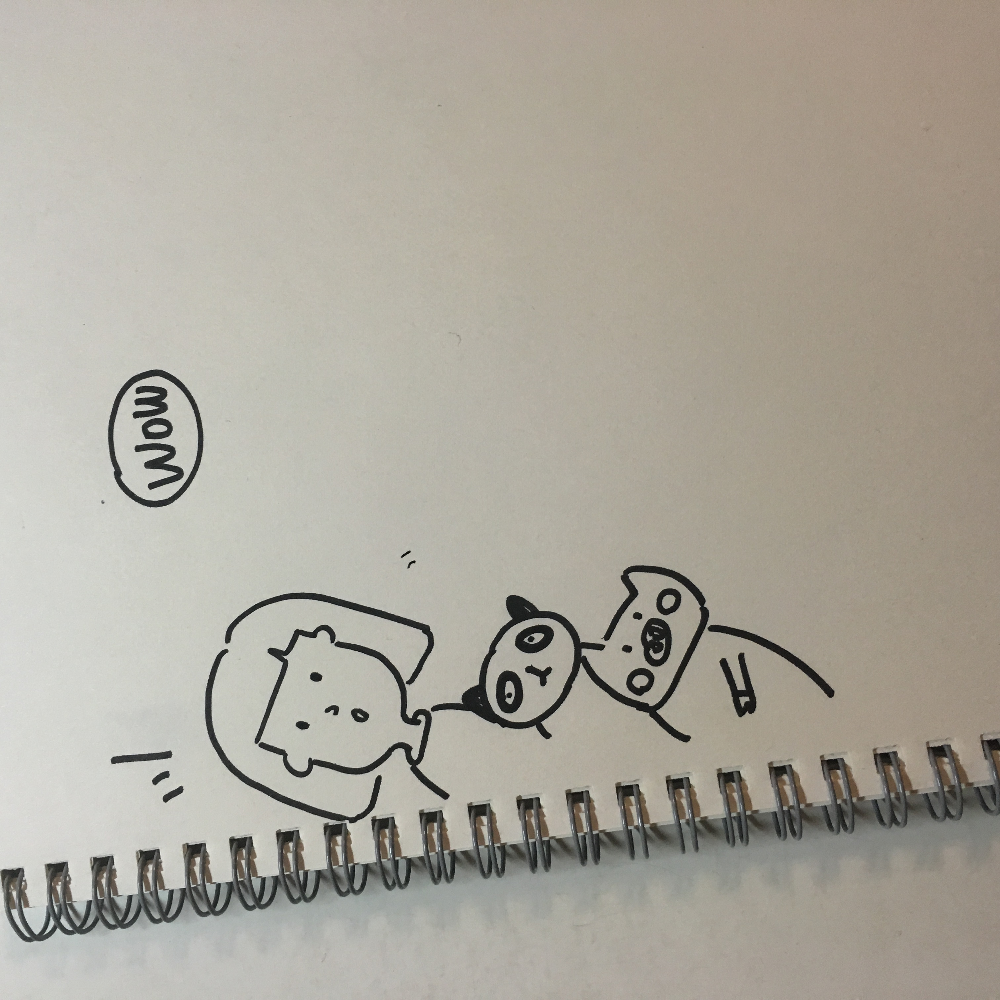
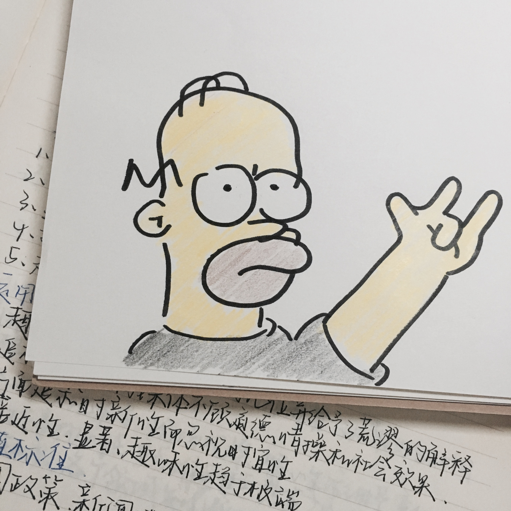

<head>
	<title>Let's go mental health!</title>

	<meta name="viewport" content="width=device-width, initial-scale=1.0, maximum-scale=1.0, user-scalable=no">

	<link href="bootstrap.min.css" rel="stylesheet">
	<link rel='stylesheet'type='text/css' href='final.css'>
	


	<!--font-style-->	
	<link href="https://fonts.googleapis.com/css?family=Permanent+Marker" rel="stylesheet">
	<link href="https://fonts.googleapis.com/css?family=Gloria+Hallelujah" rel="stylesheet">
	<link href="https://fonts.googleapis.com/css?family=Ranga" rel="stylesheet">
	<link href="https://fonts.googleapis.com/css?family=Poiret+One" rel="stylesheet">
	<link href="https://fonts.googleapis.com/css?family=Kalam" rel="stylesheet">
	<link href="https://fonts.googleapis.com/css?family=Press+Start+2P" rel="stylesheet">
	<link href="https://fonts.googleapis.com/css?family=Dosis" rel="stylesheet">


<!--infomation-->


<section class="panel home" data-section-name="home">
	
<div id="background1"  style="display:none;">


<!--design a navigation-->
	<nav class="navbar navbar-default "  role="navigation"><!--navbar-fixed-top-->
	<div class="container-flud">
	   <div class="navbar-header">
		<a class="navbar-brand" href="#">HOME</a>
	   </div>
		
	   <div>
		<ul class="nav nav-pills" >
		  <li class="active"><a href="#background2" id="title">Background</a></li>
		  

		  <li role="presentation" class="dropdown" id="introduction" >
		     <a class="dropdown-toggle" data-toggle="dropdown" href="#" role="button" aria-haspopup="true" aria-expanded="false" >
			Introduction<span class="caret"></span>
		     </a>
		     <ul class="dropdown-menu" id="introduction1" >
			
		     	<li ><a href="#background3" id="subintroduction1">Draft Bottle</a></li>
			<li ><a href="#background4" id="subintroduction1">Feature</a></li>
			<li><a href="#background5"  id="subintroduction1">Gallery</a></li>
			
		     </ul>
		  </li>

		 <li role="presentation" class="dropdown">
		    <a  href="#background6" id="contact">
		       Contact us</a>
		</li>

		<li role="presentation">
		  <a href="http://www.facebook.com" target="-blank" id="sign"> Sign in</a>
		</li>
	</div>
	</nav>


	
	<h1 id="top1"> DRAFT BOTTLE </h1>
	<p id="top2">IN</P> 
	<h2 id="top3" onmouseover="appearStart()" onmouseout="disappearStart()" >YOUR "WORLD"</h2>
	
	
	
	
	<input type="button"
		class="button btn1"
		value=" "
		onclick="location.href='#background2'"
		
/>

	<input type="button"
		class="button btn2"
		value=" "
		onclick="location.href='#background3'"
/>

	<input type="button"
		class="button btn3"
		value=" "
		onclick="location.href='#background4'"
/>


</div>	
	
</section>
	


<!--background-->

<section class="panel overview" data-section-name="overview">        


	<div id="background2">
	


	<input type="button"
		class="button btn5"
		value=" "
		onclick="location.href='#background1'"
	/>	

	

	<h2>Mental Health in China and Britain</h2>
		<h3>0.The quantitly of psychologists is limited and students are shy</h3>
		<h3>1.Chinese education is competitive</h3>

		<h4>High rate of students have mental health problem</h4>
		 
		<div id="bg2text">
		<p1>In China</p1>
		   <p2>

Student mental health centers are established in every school. Take my school for example. There are totally 90 classes, 5400 students. However, only about 10 psychology instructors are in the whole seminary. Therefore, not only cannot all the students mental health be counselled but the problem also cannot be regulated on immediate. In addition, Chinese students are not willing to go to the mental health centers, since they are so shy that they are afraid other students regard their mental health as a very serious problem and stayed away from them as consequence. What is more, Chinese education is competitive. For instances, there are about 700,000 senior students having the college entrance examination and only about 200 students can be admitted to the national best school, such as Peking University. Therefore, it is quite normal mental health issues occur to students’ daily life. Gradually, an increasing number of mental health problems are accumulated but not noticed or therapy, leading to students suicide.   
 		   </p2>
		</div>


	<div id="bg2text2">
	
	      <p1>In Britain</p1>

		 <p2>
According to the recent survey, 78% of university students reported having had a mental health problem over the past year, and 33% had had suicidal thoughts. The university students who cannot cope with the mental obstacles tend to chose to drop out, drinking and drugs, self-harm or suicide. The office for National Statistics says that 112 full-time students took their lives in 2012.Nowdays, talking to someone, consulting to University counseling services, Student-led services or online self-help multiply the methods of regulating students mental health.

 the Guardian. (2017). Student mental health: a new model for universities. [online] Available at: https://www.theguardian.com/higher-education-network/2016/mar/02/student-mental-health-a-new-model-for-universities [Accessed 25 Mar. 2017].
		</p2>

	</div>


	


	</div>


</section>
	

<!--draft bottle-->
	
<section class="panel configuration" data-section-name="configuration">	


	<div id="background3">
	<input type="button"
		class="button btn6"
		value=" "
		onclick="location.href='#background1'"
/>

	<h2 id="toptitle">DRAFT BOTTLE SYSTEMS</h2>
			
	      <div id="bg3text">	
		<h3 id="students">For students</h3>
		

		<h5>More Private</h5>
		<p3>
		By utilizing the online &#34 draft bottle chatting,&#34 students feeling frustrated, depressed or stressed out, which are considered as mild mental health problem, are capable to send their issues to psychologists, mental health teacher or students in senior who might have faced the same affection before in a more secret ways.
		</p3>
		

		<h5>Contacting to the students in senior</h5>
		<p3>How secret is it? As we know, when receiving a draft bottle, we could acknowledge what the sender&#180s feeling is but it is impossible to know who he is. Similarly, given the fact that students are too shy to cope with the mental health by consulting to psychological instructors, with the selection of hiding his personal information, they can send their thoughts, mood or resent behavior to psychologists or students in senior, which could allow them to talk about their emotional issues freely.
		</p3>

		<h5>Obtaining the experience from others</h5>
		<p3>Therefore, through using the online &#34draft bottle chatting&#34 downloaded on the phone, the purpose of consulting to students in senior is able to achieve, which cope with the distance or time&#180s arrangement-problems. In addition, &#34draft bottle&#34 enables students to listen some cheerful songs, joking and experiences which is uploaded by the students in senior who face mental problems before, which are updated in every week.
		</p3>

		</div>


	    <div id="bg3text2">
		<h3 id="students"> For teachers</h3>
		<h5>Analysis</h5>
		<p3>If the data including the times of non-delivery homework and coming late for schools, consumption in school is uploaded to the &#34draft bottle system&#34, it will record overall the submitting and show it in a line chart for indicating the student&#180s tendency. If a student has non-delivery, late for school or high consumption in school reaching a high level, which means there might be something happening on the student, the draft will automatically remain the teachers it is time to pay more attention to him. Meanwhile, the system will send the diagram which reflects his resent situation, to the student for reminding. If possible, by analyzing the daily data, system can show degree of the mental health problem.
		</p3>

		<h5>Questionnaire</h5>
		<p3>There are marvelous questionnaires for referencing whether the students have mental health problem. However, it is impossible to spend a lot of time in it especially having a class. Therefore, the solution is teacher can sending the questionnaire to overall the students&#180 by &#34draft bottle chatting&#34. Students can fulfill it on their phone. Only students themselves and teachers can acknowledge the results, which is a better way for noticing the students situations. 
		</p3>

		<h5> Connection</h5>

		<p3>In some mental health issue, maybe it is better for the students in senior to communicate with that student. Teachers can ask a member in the &#34draft bottle system&#34 senior students for assistance such as sending a message. Next, students in senior class can directly give their experience to that student in the &#34online draft bottle chatting&#34, which can get closer to students.
		</p3> 

 	    </div>
	  <div id="bg3text3">
		<h3 id="midtitle">For Psychology instructors</h3>
		<p3>The function in &#34draft bottle system&#34 is quite similar to the teachers. What teachers receive also transpond to the psychology instructors. In addition the standards of the degrees of the mental health problem are defined by them and questionnaires are also designed in the &#34draft bottle system.&#34

		</p3>
	 </div>


		


	</div>

	<input type="button"
		class="button btn4"
		value=" "
		onclick="location.href='#background1'"
/>

</section>


<!--feature-->	

<section class="panel options" data-section-name="options">	
	<div id="background4">
	
	
		<div id="feature">		
		<!--alien-->
		<h5 id="alien">Computer:Collecting and Analyzing</h5>
		

		<!--phone-->
		<h5 id="phone">Phone:Testing and Self-healing</h5>
		

		<!--envelope-->
		<h5 id="envelope">Message:Online Communication</h5> 
		

		<!--call-->
		<h5 id="call">Calling:Informing to Teachers</h5>		
		</div>
	</div>


</section>


	
<!--gallery-->	
<section class="panel methods" data-section-name="methods">

<div id="background5">
	
<!--gallery-->	
     <div  >
	 
	 
	 
	 
			
	<div>
	 
	 
	 
	 
	 </div>
    </div>
</div>
<!-- 
	<input type="button"
		class="button btn7"
		value=" "
		onclick="location.href='#background1'"
/>													


-->


</section>
	
<!--contact us-->
<section class="panel methods" data-section-name="methods">
	<div id="background6">
	<form name="input" action="get">
	Your E-mail:
	<textarea cols="3" id="mail"></textarea>
	</br>Your suggestion:
	<textarea cols="5" id="answer" value="Your suggestion"></textarea>
	</br>
	
	</form>
	
	</div>	

	
</section>


<!-- -->

<script src="http://libs.baidu.com/jquery/1.11.1/jquery.min.js"></script>

<script src="bootstrap.min.js"></script>
<script src="jquery-1.11.3.js"></script>
<script src="jquery.easing.1.3.js"></script>
<script src="scrollify.min.js"></script>
<script src="main.js"></script>
<script src="indexfinal.js"></script>
                                                                 

</body>
